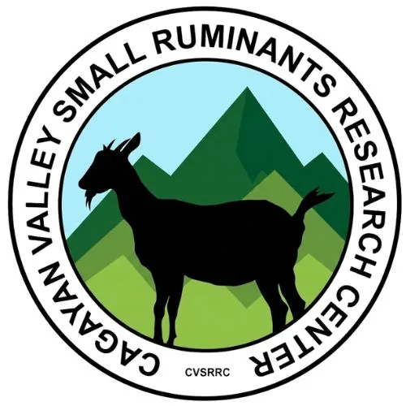

DOST-PCAARRD-ISU Livestock TBI
Isabela State University · Region II
The DOST-PCAARRD-ISU Livestock TBI is hosted by Isabela State University through its Cagayan Valley Small Ruminant Research Center (CVSRRC) in Echague, Isabela and serves Region II (Cagayan Valley). CVSRRC was established in 2010 by the ISU Board of Regents to lead research and development activities for improving the small ruminant industry in the region. In 2017, DOST-PCAARRD designated it as one of the six pioneering agriculture-based Technology Business Incubators in the country.
- Category
- Technology Business Incubator
- Host institution
- Isabela State University
- City
- Echague, Isabela
- Region
- Region II
- Operating status
- Operating
About the Center
ISU CVSRRC-TBI capitalizes on its deep expertise in goat science, a rich portfolio of mature technologies from goat production to post-production processing, and facilities capable of supporting commercial-scale production. The center is particularly distinguished for its work in artificial insemination (AI) technology for small ruminants, and has hosted Balik Scientist veterinary experts to advance embryo technology for Cagayan Valley goat breeds.
The center bridges scientific innovation and enterprise creation in the livestock sector — connecting smallholder goat raisers, food processors, and agri-entrepreneurs with DOST-PCAARRD technologies, expert mentorship, and business development support to build viable livestock-based enterprises in Region II.
Programs & Services
- Goat Production Technology Business Incubation — End-to-end incubation support for goat production enterprises from breeding management through post-production, using ISU CVSRRC's proven technologies
- Farmer Livestock School — Goat Enterprise Management (FLS-GEM) — A 30-week comprehensive DOST-PCAARRD training program on science-based goat production covering nutrition, health management, breeding, and business skills
- Artificial Insemination (AI) Technology Transfer — Training on and access to AI technology for goat breeds as an alternative to natural mating, improving breeding efficiency and herd genetics for commercial producers
- Embryo Transfer Technology — Advanced reproductive technology services for Cagayan Valley goat breeds, including transfer of expertise from international Balik Scientist veterinary experts
- Post-Production & Food Processing Support — Technical guidance on goat meat and dairy processing, packaging, product development, and regulatory compliance for value-added livestock products
- Business Development & IP Services — Business planning, marketing support, intellectual property documentation, and linkage to DOST grants and financing institutions for incubatee enterprises
- Research & Livestock Farm Access — Incubatees and training participants gain access to CVSRRC's research goat farm, laboratory facilities, and processing infrastructure for hands-on learning and production
Contact
Sources & references
- sites.google.com/isu.edu.ph/cvsrrc
- research.isu.edu.ph/research-centers/cagayan-valley-small-ruminants-researc…
- facebook.com/ISU.CVSRRC
Details are drawn from public records and the sources above, July 2026.
Startupreneur Innovation Hub · synced from the Notion catalog (July 2026) · status: published.